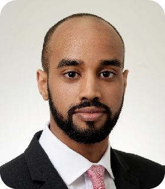

Rashad Malik
Data Scientist & Technology Consultant
I am a data professional transitioning from seven years of delivering SAP implementations and analytics projects for FTSE-100 clients into the field of data science.
With a foundation in Mechanical Engineering and a passion for turning chaotic data into clear insights, I'm currently completing an MSc in Data Science & AI to deepen my expertise.
Actively seeking new Data Science opportunities in London.
Core Skills
Python
Pandas
Statistical Modelling
Machine Learning
Data Mining
Information Retrieval
Data Visualisation
Stakeholder Management
Change Management
ERP
Experience
SAP Consultant, Senior Associate
PwC · London, UK
- Played a key role in large-scale SAP implementations, specialising in the Enterprise Asset Management (plant maintenance) module for FTSE 100 clients.
- Drove stakeholder engagement and adoption by building and presenting targeted proof-of-concept solutions and delivering functional and technical system demos of the SAP Intelligent Asset Management suite.
- Owned critical technical workstreams, which involved creating a complex integration catalogue for a major digital transformation, and managing over 1,400 technical transports to ensure a smooth go-live.
S/4HANA Consultant
Bluefin Solutions · London, UK
- Joined the S/4HANA delivery function after completing the graduate consulting boot-camp, assisting with one of the first S/4HANA Cloud implementations in the country.
- Led the data migration workstream, migrating the client's master data from legacy systems to the new SAP system, and building over 20 Legacy System Migration Workbench (LSMW) projects for their master and transactional data.
- Contributed to a BPC forecasting solution by building and maintaining over 60 BEx Queries and more than 50 Analysis for Office workbooks to assist the client with reporting and financial analysis.
Industrial Placement Mechanical Engineer
RWE npower · Pembroke, Wales
- Completed an industrial placement at the Pembroke gas-fired power station, undertaking both on-site and in-office projects related to plant maintenance and mechanical engineering.
Education & Certifications
MSc, Data Science & Artificial Intelligence
Queen Mary University of London (Expected September 2025)
MSc, Management
Warwick Business School (2015)
BEng, Mechanical Engineering with Industry
University of Leicester (2014)
Data Analyst in Python
Dataquest.io (2023)
Data Visualisation with Tableau
Dataquest.io (2023)